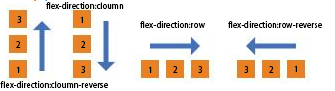
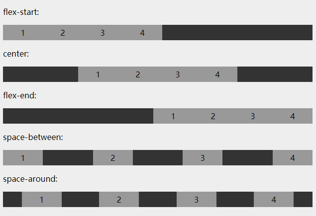
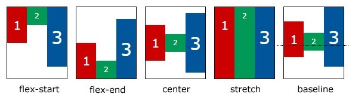
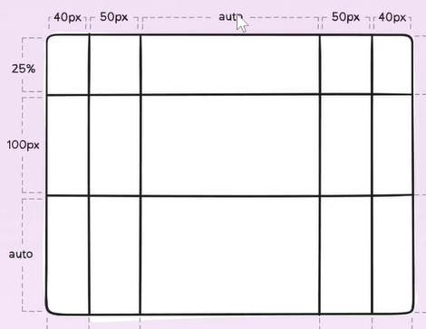

2 minutes
9 - [css全解]布局
1.布局分类
两种
a: 固定宽度布局，一般宽度为 960 、 1000 、 1024px
b: 不固定宽度布局，主要靠文档流的原理来布局
2.还记得吗?
a: 文档流本来就是自适应的，不需要加额外的样式
<style>
span{
border:1px solid red;
}
</style>
//它本来就会根据你页面的宽度大小来自适应
<span>1</span>
<span>2</span>
<span>3</span>
<span>5</span>
<span>1</span>
<span>2</span>
<span>3</span>
<span>5</span>
3.第三种布局
a: 响应式布局
b: 意思就是 pc 上固定宽度，手机上不固定宽度
c: 也就是一种混合布局
4.布局的两种思路
① 从大到小
先定下大局
然后完善每个部分的小布局
② 从小到大
先完成小布局
然后组合成大布局
③ 两种均可
新人推荐用第二种，因为小的简单
老手一般用第一种，因为熟练有大局观
4.用什么 css 布局

5.float 布局
a: 步骤
-子元素上加 float:left/right 和 width
-在父元素上加.clearfix(必须要加上)
实践
不同布局
-用 float 做两栏布局(如顶部条)
-用 float 做三栏布局(内容区)
-用 float 做四栏布局(如导航)
-用 float 做平均布局(如产品展示区)
案例展示
6.Flex 布局
a: 让一个元素变成 flex 容器(下面是容器的属性)
<style>
.container{
display:flex; /*或者inline-flex*/
}
<div class="container"></div>
</style>
b:控制它的流动方向(控制什么方向主轴就是什么方向)
flex-direction:row 默认
flex-direction:row-reverse 从右到左排
flex-direction:cloumn
flex-direction:cloumn-reverse 道理和上面一样

c:控制它是否折行
flex-warp:nowrap 默认
flex-warp:wrap 折行
flex-warp:wrap-reverse 折行反转
d:主轴的对齐方式-默认主轴是横轴-除非改变了 flex-direction 方向
justify-content:flex-start 大家都往前靠
justify-content:flex-end 大家都往后靠
justify-content:center 大家都往中间靠
justify-content:space-between 把空间都放在中间
justify-content:space-around 均匀分布两则空间

c:次轴对齐(它会根据你主轴方向来决定自己次轴方向)
align-items:flex-start
algin-items:flex-end
algin-items:center
algin-items:stretch

d:次轴内容对齐方式
align-content:flex-start 大家都往前靠
align-content:flex-end 大家都往后靠
align-content:center 大家都往中间靠(对单行是没有效果的)
align-content:space-between 把空间都放在中间
align-content:space-around 均匀分布两则空间
flex item 有哪些属性(容器里面的子元素)
a: order 属性(设置弹性盒子模型对象子元素的顺序)
b：flex-grow 属性(控制自己如何长胖,默认值是 0)
c：flex-shrink 属性(控制如何变瘦)一般写 flex-shrink:0 防止变瘦，默认是 1
d：align-self 属性 (algin-self:flex-start algin-self:flex-end 根据次轴来决定的)
flex 布局实践(不同布局)
-用 flex 做两栏布局
-用 flex 做三栏布局
-用 flex 做四栏布局
-用 flex 做平均布局
-用 flex 组合使用，做更复杂的布局
案例展示
经验
-永远不要把 width 和 height 写死，除非特殊说明
-用 min-width / max-width / min-height / max-height
-flex 可以基本满足所有需求
-flex 和 margin-xxx:auto 配合有意外效果
什么叫写死
-写死 width:100px;
不写死
-width:50%
-max-width:100px
-width:30vw
-min-width:80%
-特点：不使用 px，或者加 min max 前缀
7.Grid 布局
a: 让一个元素变成 gird 容器(下面是容器的属性)
.container{
display:gird | inline-grid;
}
设置行和列
grid-template-columns:40px 50px auto 50px 40px;
grid-template-rows:25% 100px auto;

平均布局可以这样子
grid-template-columns:1fr 1fr 1fr;
grid-template-rows:1fr 1fr 1fr;
grid-template-areas
<div class="container">
<header></header>
<asdie></asdie>
<main></main>
<div class="ad"></div>
<footer></footer>
</div>
.container{
grid-template-areas{
"header header header" /*三行三列*/
"asdie main ad"
"footer footer footer"
}
}
.ad{
grid-areas:ad
}
grid-gap(基本算替换了 margin 外边距)
a：grid-gap:10px 则行和列都会生效
b：grid-row-gap:10px 则行生效
c：grid-column-gap:10px 则列生效
grid 有哪些属性(容器里面的子元素)
a：grid-rows-start:1
b：grid-rows-end:3
c：grid-column-start:1
d：grid-column-end:3
复合样式：
a：grid-row : 2 / 4 就会设置从第二行开始，到第四行结束
b: grid-column : 2 / 4 就会设置从第二列开始，到第四列结束
c：grid-area : 1 / 1 / 3 / 6 第一行开始，第一列开始，第三行结束，第 6 列结束
案例展示
289 Words
2019-12-25 21:46 +0800